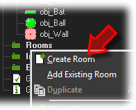
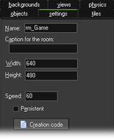
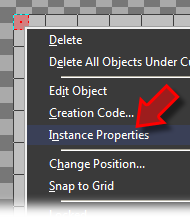
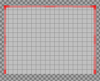
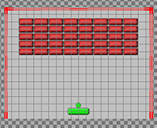

Tutorial
Page 7 of 13
Creating The Game Room
To play our game we need a room as without one GameMaker will not run. So, right click on the room resource folder and select Create Room.

You should now go to the settings tab and give your room a descriptive name and set the size and room speed. The standard size of 640x480 should be fine, but the speed would be better at 60
rather than 30. This will give a smoother gameplay experience and should not lag as the game is not complex, however for larger or more intensive games you may wish to keep this at 30.

We can now add in objects to the room, so click on the objects tab and then select the wall object. Now, you could place loads of single wall objects all around the edges of the room, but
we are going to make use of the room editors ability to change an instances properties to stretch the wall instances and so only use three of them. This is very important as keeping the
instance count down in your rooms will mean a faster and more optimised game.
Place an instance of your wall object in the top left corner of the room, and then right-click on it to bring up the instance menu and select Instance properties.

You can now modify some of the base elements of your instance, like size, colour, angle and alpha. For this instance we need to change the scale of the instance so that it occupies the whole
side of the room. This is achieved by setting the image Y scale (if the room is 480px tall, this value will be 30), so set it now and then close the pop-up and you will see the changes to the instance in the
room.
Repeat this process to add a wall instance that covers the top and the right of the room (you may need to un check the Delete Underlying option in the editor) so that you have a room like this:

Now you can start to place bricks into the room, which is simply a case of selecting this object from the editor and adding them into the room one at a time. Once you have it looking as you wish, you should also
add into the room at the bottom an instance of the bat object and an instance of the ball object. The final room should look like this:

You should now save your game and then test it by clicking the green Play at the top of the screen. As you can see, it is very basic, but we are now going to continue and polish things up a bit! You
can also open a version of this game to compare with your work so far by going to Help menu and then selecting the menu option Open GameMaker
In Explorer. Once there you should browse to tutorials\3 - Coding a Game folder and import the Breakout_BASIC.gmz.
Click on the Next button to go to the next page of the tutorial.